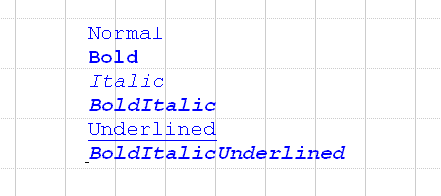
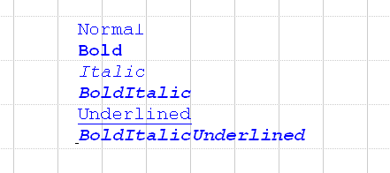

TE::IFont::FontStyle Enum
An enum for the constants for style definition.
enum FontStyle { normal = 0, bold = 1, italic = 2, underline = 4 };
Value Definitions
- normal
- bold
- italic
- underline
-

Graphisoft®
TextEngineVersion: 1.0
An enum for the constants for style definition.
enum FontStyle { normal = 0, bold = 1, italic = 2, underline = 4 };

Copyright © 2022 - GRAPHISOFT SE. All rights reserved worldwide.
Modified on May 29, 2022